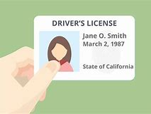

科目四考试规则(安全文明驾驶常识考试)
考试内容
主要内容包括：安全文明驾驶操作要求、恶劣气象和复杂道路条件下的安全驾驶知识、爆胎等紧急情况下的临危处理方法，以及发生交通事故后的处理知识等。
1、根据所考的驾照类型从相应的科目四考试题库中按比例抽取50道题进行答题，小车类驾照从1235题中抽取，大车类驾照从1235题中抽取，每题2分。
2、考试时间为45分钟，答题过程中错12分(6道题)即终止本场考试。
3、考试题型分对错题（1--22题）、单选题(23--45题）、多选题（46--50题）。
4、考试题目包括图片题、情景识别题、文字叙述题。
